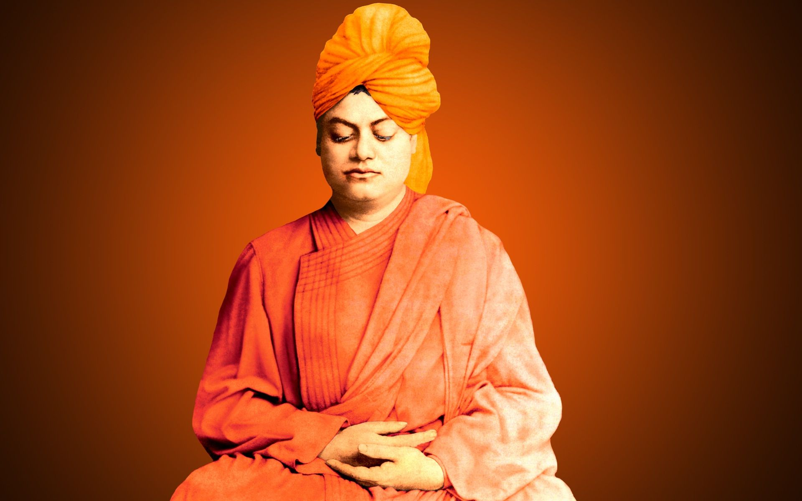
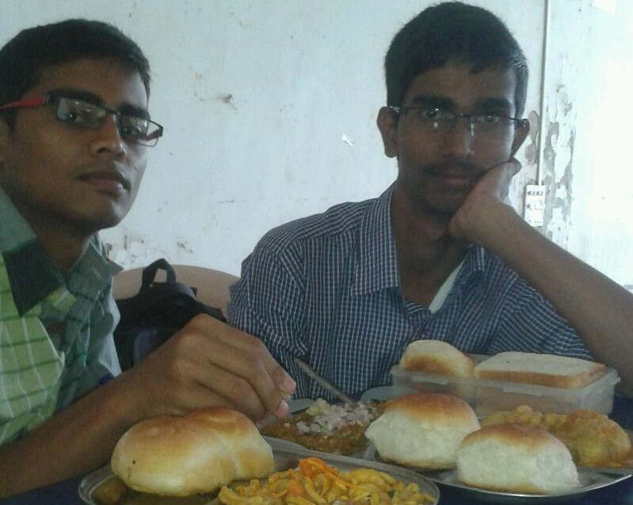
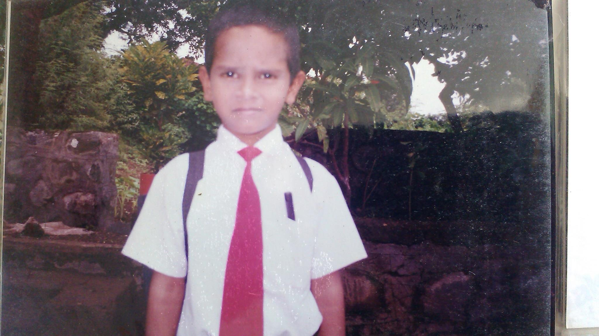

Vision
To be a university globally trusted for technical excellence where learning and research integrate to sustain society and industry.

To be a university globally trusted for technical excellence where learning and research integrate to sustain society and industry.
By 55,000 years ago, the first modern humans, or Homo sapiens, had arrived on the Indian subcontinent from Africa, where they had earlier evolved.[27][28][29] The earliest known modern human remains in South Asia date to about 30,000 years ago.[27] After 6500 BCE, evidence for domestication of food crops and animals, construction of permanent structures, and storage of agricultural surplus appeared in Mehrgarh and other sites in what is now Balochistan, Pakistan.[82] These gradually developed into the Indus Valley civilisation,[83][82] the first urban culture in South Asia,[84] which flourished during 2500–1900 BCE in what is now Pakistan and western India.[85] Centred around cities such as Mohenjo-daro, Harappa, Dholavira, and Kalibangan, and relying on varied forms of subsistence, the civilisation engaged robustly in crafts production and wide-ranging trade.[84]
During the period 2000–500 BCE, many regions of the subcontinent transitioned from the Chalcolithic cultures to the Iron Age ones.[86] The Vedas, the oldest scriptures associated with Hinduism,[87] were composed during this period,[88] and historians have analysed these to posit a Vedic culture in the Punjab region and the upper Gangetic Plain.[86] Most historians also consider this period to have encompassed several waves of Indo-Aryan migration into the subcontinent from the north-west.[87] The caste system, which created a hierarchy of priests, warriors, and free peasants, but which excluded indigenous peoples by labelling their occupations impure, arose during this period.[89] On the Deccan Plateau, archaeological evidence from this period suggests the existence of a chiefdom stage of political organisation.[86] In South India, a progression to sedentary life is indicated by the large number of megalithic monuments dating from this period,[90] as well as by nearby traces of agriculture, irrigation tanks, and craft traditions.[90]
Cave 26 of the rock-cut Ajanta Caves
In the late Vedic period, around the 6th century BCE, the small states and chiefdoms of the Ganges Plain and the north-western regions had consolidated into 16 major oligarchies and monarchies that were known as the mahajanapadas.[91][92] The emerging urbanisation gave rise to non-Vedic religious movements, two of which became independent religions. Jainism came into prominence during the life of its exemplar, Mahavira.[93] Buddhism, based on the teachings of Gautama Buddha, attracted followers from all social classes excepting the middle class; chronicling the life of the Buddha was central to the beginnings of recorded history in India.[94][95][96] In an age of increasing urban wealth, both religions held up renunciation as an ideal,[97] and both established long-lasting monastic traditions. Politically, by the 3rd century BCE, the kingdom of Magadha had annexed or reduced other states to emerge as the Mauryan Empire.[98] The empire was once thought to have controlled most of the subcontinent except the far south, but its core regions are now thought to have been separated by large autonomous areas.[99][100] The Mauryan kings are known as much for their empire-building and determined management of public life as for Ashoka's renunciation of militarism and far-flung advocacy of the Buddhist dhamma.[101][102]
The Sangam literature of the Tamil language reveals that, between 200 BCE and 200 CE, the southern peninsula was ruled by the Cheras, the Cholas, and the Pandyas, dynasties that traded extensively with the Roman Empire and with West and South-East Asia.[103][104] In North India, Hinduism asserted patriarchal control within the family, leading to increased subordination of women.[105][98] By the 4th and 5th centuries, the Gupta Empire had created a complex system of administration and taxation in the greater Ganges Plain; this system became a model for later Indian kingdoms.[106][107] Under the Guptas, a renewed Hinduism based on devotion, rather than the management of ritual, began to assert itself.[108] This renewal was reflected in a flowering of sculpture and architecture, which found patrons among an urban elite.[107] Classical Sanskrit literature flowered as well, and Indian science, astronomy, medicine, and mathematics made significant advances.[107]
Medieval India
Brihadeshwara temple, Thanjavur, completed in 1010 CE
The Qutub Minar, 73 m (240 ft) tall, completed by the Sultan of Delhi, Iltutmish
The Indian early medieval age, from 600 to 1200 CE, is defined by regional kingdoms and cultural diversity.[109] When Harsha of Kannauj, who ruled much of the Indo-Gangetic Plain from 606 to 647 CE, attempted to expand southwards, he was defeated by the Chalukya ruler of the Deccan.[110] When his successor attempted to expand eastwards, he was defeated by the Pala king of Bengal.[110] When the Chalukyas attempted to expand southwards, they were defeated by the Pallavas from farther south, who in turn were opposed by the Pandyas and the Cholas from still farther south.[110] No ruler of this period was able to create an empire and consistently control lands much beyond their core region.[109] During this time, pastoral peoples, whose land had been cleared to make way for the growing agricultural economy, were accommodated within caste society, as were new non-traditional ruling classes.[111] The caste system consequently began to show regional differences.[111]
In the 6th and 7th centuries, the first devotional hymns were created in the Tamil language.[112] They were imitated all over India and led to both the resurgence of Hinduism and the development of all modern languages of the subcontinent.[112] Indian royalty, big and small, and the temples they patronised drew citizens in great numbers to the capital cities, which became economic hubs as well.[113] Temple towns of various sizes began to appear everywhere as India underwent another urbanisation.[113] By the 8th and 9th centuries, the effects were felt in South-East Asia, as South Indian culture and political systems were exported to lands that became part of modern-day Myanmar, Thailand, Laos, Brunei, Cambodia, Vietnam, Philippines, Malaysia, and Indonesia.[114] Indian merchants, scholars, and sometimes armies were involved in this transmission; South-East Asians took the initiative as well, with many sojourning in Indian seminaries and translating Buddhist and Hindu texts into their languages.[114]
After the 10th century, Muslim Central Asian nomadic clans, using swift-horse cavalry and raising vast armies united by ethnicity and religion, repeatedly overran South Asia's north-western plains, leading eventually to the establishment of the Islamic Delhi Sultanate in 1206.[115] The sultanate was to control much of North India and to make many forays into South India. Although at first disruptive for the Indian elites, the sultanate largely left its vast non-Muslim subject population to its own laws and customs.[116][117] By repeatedly repulsing Mongol raiders in the 13th century, the sultanate saved India from the devastation visited on West and Central Asia, setting the scene for centuries of migration of fleeing soldiers, learned men, mystics, traders, artists, and artisans from that region into the subcontinent, thereby creating a syncretic Indo-Islamic culture in the north.[118][119] The sultanate's raiding and weakening of the regional kingdoms of South India paved the way for the indigenous Vijayanagara Empire.[120] Embracing a strong Shaivite tradition and building upon the military technology of the sultanate, the empire came to control much of peninsular India,[121] and was to influence South Indian society for long afterwards.[120]
Early modern India
In the early 16th century, northern India, then under mainly Muslim rulers,[122] fell again to the superior mobility and firepower of a new generation of Central Asian warriors.[123] The resulting Mughal Empire did not stamp out the local societies it came to rule. Instead, it balanced and pacified them through new administrative practices[124][125] and diverse and inclusive ruling elites,[126] leading to more systematic, centralised, and uniform rule.[127] Eschewing tribal bonds and Islamic identity, especially under Akbar, the Mughals united their far-flung realms through loyalty, expressed through a Persianised culture, to an emperor who had near-divine status.[126] The Mughal state's economic policies, deriving most revenues from agriculture[128] and mandating that taxes be paid in the well-regulated silver currency,[129] caused peasants and artisans to enter larger markets.[127] The relative peace maintained by the empire during much of the 17th century was a factor in India's economic expansion,[127] resulting in greater patronage of painting, literary forms, textiles, and architecture.[130] Newly coherent social groups in northern and western India, such as the Marathas, the Rajputs, and the Sikhs, gained military and governing ambitions during Mughal rule, which, through collaboration or adversity, gave them both recognition and military experience.[131] Expanding commerce during Mughal rule gave rise to new Indian commercial and political elites along the coasts of southern and eastern India.[131] As the empire disintegrated, many among these elites were able to seek and control their own affairs.[132]